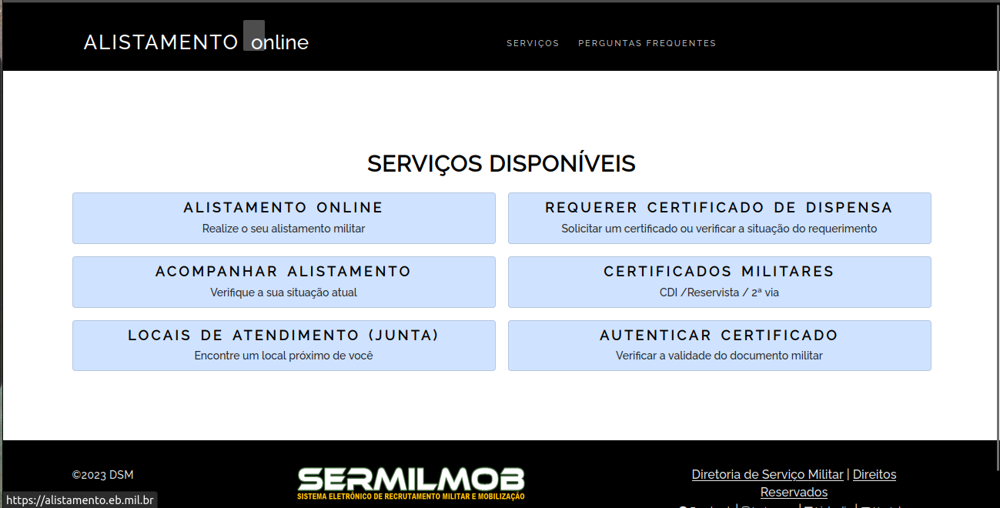
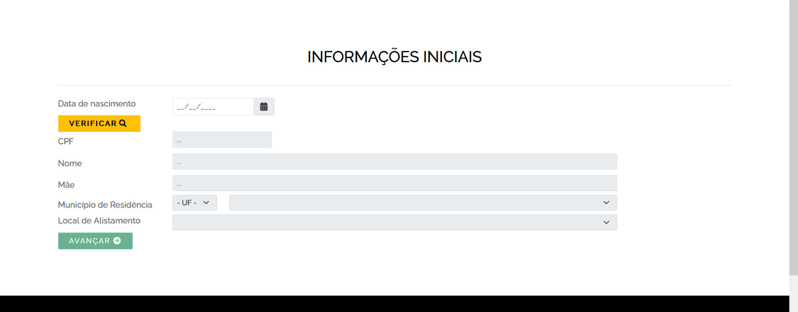
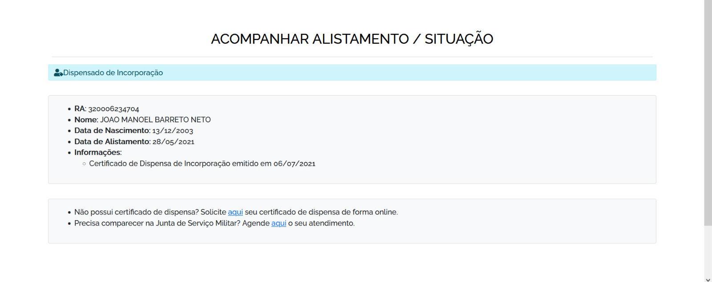
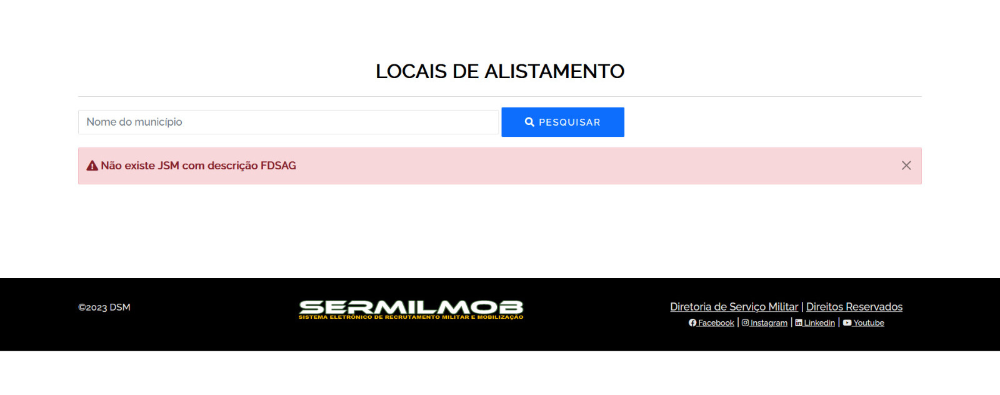

Princípios Gerais do Projeto
1. Introdução
Os Princípios Gerais do Projetos são uma série de diretrizes que são de extrema importância na construção de sistemas utilizados em IHC [1], que estão relacionados aos tópicos seguintes.
2. Expectativas dos Usuários
Esse princípio visa atender a todas as expectativas do usuário quanto a interface do projeto. As ações do sistema e as funcionalidades apresentadas devem ser claras e objetivas, direcionando o usuário para determinada finalidade, sem gerar confusão. No site do Alistamento Militar, o usuário espera ter um conteúdo que explique quais os passos ele deve seguir para conseguir realizar um cadastro no GOV e posteriormente realizar o alistamento. Após a conclusão dessas tarefas, o usuário precisa ter um direcionamento para onde ele deve ir, quanto tempo esperar, e como emitir os certificados.
3. Simplicidade
Para que o usuário consiga executar tarefas em um sistema sem dificuldades, surge o princípio da simplicidade. As tarefas consideradas complexas demais são inovadas, por meio de abordagens tecnológicas que vão desde um tutorial para ensinar o usuário a realizar determinada atividade, até a automação desta tarefa, sem reduzir a capacidade de trabalho próprio do usuário, isto é, aquele trabalho que não depende da tecnologia. No caso do site de Alistamento Militar, mesmo com a simplicidade do site, tarefas como emitir certificados deveriam ocorrer de forma separada e explicativa, por exemplo:

Figura 1: Página principal do site do Alistamento Online (Fonte: Alistamento Online; 2023).
Ao adentrar na aba de emitir certificado, não há opção de escolher um certificado, nem saber qual deles já estão disponíveis, uma vez que ele gera apenas o certificado que está disponível e não retorna um Feedback sobre os outro, se eles estão em análise ou não.
4. Equilíbrio e Liberdade
O usuário deve ter um certo equilíbrio com relação a liberdade de utilização de um sistema. Por esse motivo, é necessário que haja uma série de opções que orientem o usuário em suas escolhas, para que ele não se perca. No entanto, caso o usuário queira explorar uma nova funcionalidade, os cenários devem possibilitar sua chegada até ela, levando em consideração o nível de experiência do usuário. No caso do Alistamento Militar, a página permite que o usuário explore o site de diversas formas. No entanto, o que aparece para o usuário que não se alistou é o mesmo para aquele que já realizaou essa tarefa, permitindo que o mesmo usuário faça uma alistamento para outra pessoa, por exemplo. Isso deveria ser limitado de certa forma.
5. Consistência e Padronização
A construção de um sistema deve ser realizada de acordo com padrões que devem ser seguidos em todas as partes do sistema. Alguns exemplos de estruturas que devem ser padronizadas são: layout, visualização de informações, ações e seus resultados. Além disso, elementos de interface que possuem funcionalidades diferentes devem ser facilmente distinguidos, mantendo a consistência do sistema. No caso do site do alistamento, o cadastro do usuário não segue um padrão, porque a estrutura do cadastro GOV é diferente daquele realizado no Alistamento Militar.
Figura 2: Processo de cadastro/login do site gov.br(Fonte: gov.br; 2023).

Figura 3: Processo de alistamento no site do Alistamento Online (Fonte: Alistamento Online; 2023).
6. Eficiência e Antecipação do Usuário
O princípio da eficiência visa garantir ao usuário a interação do sistema, mesmo em situações em que há a necessidade de esperar um processamento, não interrompendo o usuário em seu trabalho. Além disso, é de extrema importância que o sistema não repita perguntas de orientação, ou seja, uma vez respondida, o sistema deve guardar aquela informação para não incomodar o usuário novamente. Aliado a isso, surge o princípio da antecipação, que oferece ao usuário informações e ferramentas necessárias para determinado processo, sem que o próprio utilizador busque por elas, impactando positivamente a eficiência do sistema. No caso do Alistamento Militar, não há a antecipação do usuário quanto ao passo a passo que ele deve seguir para conseguir realizar o cadastro e o alistamento. O usuário pode acessar qualquer área da página, que deveria seguir uma linearidade na disponibilização das funcionalidades.
7. Visibilidade e Reconhecimento
Esse princípio auxilia na clareza e na objetividade de um sistema. Ao executar determinada ação, deve estar explícito para o usuário quais as opções que ele pode escolher para prosseguir naquela ação. É importante ressaltar que aquelas ações que não correspondem ao que o usuário deseja não deve aparecer.
Com base nas ações realizadas pelo usuário, o sistema deve retornar mensagens informando o que está acontecendo e se a ação foi efetivada ou não, permitindo o reconhecimento de cada ação por parte do usuário, sem dar uma impressão de que o sistema não está respondendo. O site do alistamento deve retornar uma mensagem informando que o cadastro foi realizado e que o usuário deve visitar o site frequentemente para acompanhar o status do alistamento. Além disso, ao clicar na parte de acompanhamento, é necessário que o site apresente em qual parte do processamento o usuário está e quais etapas já foram realizadas.

8. Conteúdo Relevante
Os conteúdos relevantes para os usuários devem estar apresentados de forma clara, sem apresentar informações inúteis ou pouco relevantes. Dessa forma, mensagens de instrução e ajuda, devem ser escritas de forma direta e livre de ambiguidades, assim como o rótulo de menus e botões. Além disso, os textos devem ser legíveis e apresentados em alto contraste. Outro fator importante é a utilização de cores secundárias claras para permitir uma maior inclusão para aquelas pessoas que não conseguem distinguir as cores.
A página do Alistamento Militar não apresenta as informações relevantes na tela de forma clara, há apenas palavras-chave a serem acessadas, mas não há explicações. Além disso, não há uma paleta de cores padronizada e nem tema de alto contraste para incluir mais pessoas.
9. Projeto para Erros
Esse princípio tem por objetivo permitir ao usuário identificar determinado erro e resolvê-lo de alguma forma, a partir de uma informação dada pelo sistema. No entanto, prevenir os erros é mais recomendado do que tratá-los posteriormente.
No site do Alistamento, as mensagens de erro não são tão claras, nem todas possui uma orientação sobre o que se deve fazer.

10. Conclusão
Dessa forma, percebe-se que para a construção de um projeto, deve ser levado em consideração diversos princípios que atendam da melhor forma possível as necessidades do usuário. Assim, descrever todos esses princípios facilita a percepção daquilo que deve ser entregue e modificado para obter a satisfação do usuário.
Referências
BARBOSA, S. D. J.; SILVA, B. S. Interação Humano-Computador. Rio de Janeiro: Elsevier, 2011.
Histórico de versão
| Versão | Data | Descrição | Autor(es) | Revisor(es) |
|---|---|---|---|---|
1.0 |
08/05/2023 | Criação inicial do documento | Danilo Carvalho e João Barreto | Bruno Martins |
1.1 |
18/06/2023 | Adição de novas imagens e legendas com fonte | João Barreto | Bruno Martins |